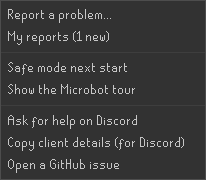
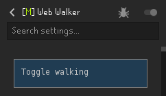
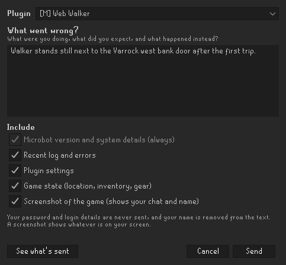
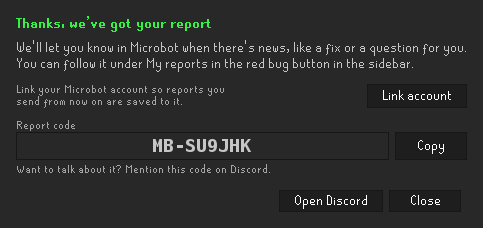
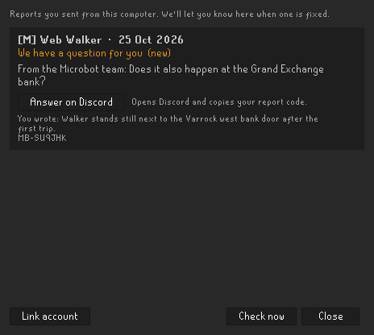
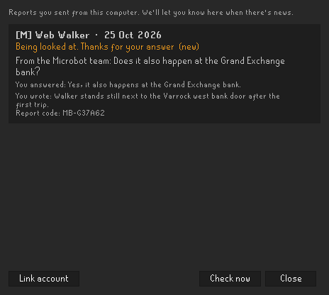

In this release
Something not working? You can now report it from inside the client, and Microbot tells you when it's fixed. No need to post on Discord and keep checking back. This release also makes logging in and world hopping more reliable, keeps the break handler logging you back in, fixes four quest problems and removes a handful of errors that could stop a script. It ships Microbot client 2.6.42 together with Clue Solver 1.0.10 from the Hub, which fixes errors on anagram clues.
Report a problem from inside the client
Say you start Web Walker to bank at Varrock west. The first trip goes fine, then your character just stands next to the bank door and does nothing. Here's how you tell us:
- Click the red bug button in the sidebar and choose Report a problem... You can also click the grey bug in the plugin's settings header, or right-click the plugin's name.
- Web Walker is already picked in the Plugin box.
- Under What went wrong?, write what you were doing and what happened, for example "Walker stands still next to the Varrock west bank door after the first trip."
- Under Include, choose what to send along: the recent log and errors, the plugin's settings, your game state (location, inventory and gear) and, if you want, a screenshot of the game. Microbot version and system details are always included: the Microbot, RuneLite, Java and OS versions, your installed plugins and your walker settings.
- Click See what's sent to check exactly what goes out, then press Send.


Start a report from the red bug button in the sidebar, or from the grey bug in a plugin's settings.

That's it. The client confirms that we've got your report and gives you a report code, in case you want to talk about it on Discord. You don't have to.

Hear back when it's fixed
When the problem is fixed, Microbot tells you in the client. It names the version with the fix and tells you what to do: update the plugin in the Microbot Hub, or restart Microbot from the launcher. An orange dot appears on the bug button, so you see it even if you were busy when the news arrived.
Choose My reports in the bug button menu to see every report you sent from this computer and where it stands. If the team needs more from you, for example whether the walker also stops at the Grand Exchange bank, the question shows up there. Type your answer and click Send answer, or answer on Discord if you prefer.


Only what you tick, plus Microbot version and system details (the Microbot, RuneLite, Java and OS versions, your installed plugins and walker settings). Your password and login details are never sent, and names are removed from the text. A screenshot shows whatever is on your screen, including your chat and name, so leave it unticked if you'd rather not share that. If you turned telemetry off, reporting respects that.
 Turned telemetry off and want it back on? You can now turn it on again from the Microbot Cloud panel.
Turned telemetry off and want it back on? You can now turn it on again from the Microbot Cloud panel.
Login and world hopping
Logging in to a chosen world is more reliable. If your profile or a script picks a world at login, for example a members world, you should end up on it more often.
- World changes at login. Picking the world while you log in now happens on the client thread, so world hopping at login is more reliable.
- A world that can't be picked. If the world you asked for can't be selected, login now stops cleanly instead of carrying on.
- Seasonal worlds. When you log in to a seasonal world, the client now checks it against its own world type while you're still on the login screen.
Break handler
Say you take a 20-minute break and the first login attempt after it fails. The break handler now keeps retrying the login, instead of leaving you sitting at the login screen until you come back.
- A break that's over no longer leaves stale break state behind.
- Stopping the break handler no longer runs into a race with a break that's starting or ending.
- The fallback world the break handler logs you in to is now checked first.
Quest Helper and Quester
 Quest Helper and its auto-play, Quester, get through more quest steps without stopping:
Quest Helper and its auto-play, Quester, get through more quest steps without stopping:
- Objects you can see but can't walk to. When a quest step asks you to use an object that's on screen but the walker can't find a path to, Quester now interacts with it directly instead of getting stuck.
- Quest items are used, not eaten. On a step that asks you to use an item, Quest Helper now uses it instead of eating it.
- Closing the bank. If the quest bank tab disappears before the game tick ends, for example because the bank just closed, Quest Helper no longer throws an error.
- Cheerers. Quest Helper now skips cheerers until the game has loaded their models.
Fewer errors and crashes
These fixes are for moments when the game is still loading, for example right after a world hop or while the scene around you changes. A script that hit one of them used to stop with an error. Now it gets a "not this time" answer and can carry on.
- Pathing. When a tile in the scene is missing, the walker now gets no path instead of failing.
- Clicking objects. If a script clicks a game object while the world view is unloaded, the click now simply fails instead of crashing.
- Shortest Path. If Shortest Path fails to start, it now shuts down safely.
- Deposit box. Scripts that use a deposit box no longer crash when its window is missing.
 Grand Exchange. GE search results are now read on the client thread, so GE scripts run into fewer errors.
Grand Exchange. GE search results are now read on the client thread, so GE scripts run into fewer errors.
Plugin updates
 Clue Solver1.0.10
Clue Solver1.0.10Anagram clues could stop the plugin with an error. Clue Solver now works out the anagram's answer, the NPC's name and where to find them on the client thread, so anagram clues get solved without errors.
For script developers
The agent server, which lets scripts and tools drive the client from outside, got four updates:
- Clearer CLI errors, exact plugin lookup, plugin health and compact JSON.
- An
/observesnapshot,/pathroute planning and doc fixes. - Menu clicks, errors, var changes, tile collision and the reason a walk stopped.
- An endpoint list, pause and resume, a request trace, an instance id, and socket and token fixes.
The build now fails loudly if you ask for :client:test, and the Hub's GE Flipper tests were updated for the 2.6.41 client.
How to update
Restart Microbot to get client 2.6.42. Clue Solver 1.0.10 shows up in the Microbot Hub panel inside the client. Something not working? Use Report a problem... in the red bug button, and we'll let you know when it's fixed.
Game images © Jagex Ltd., via the Old School RuneScape Wiki.